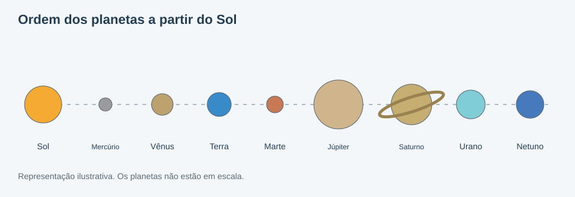
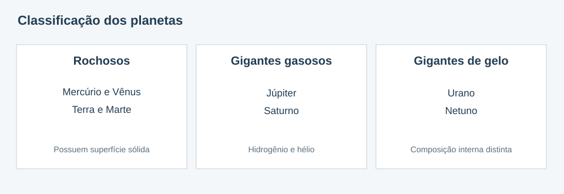
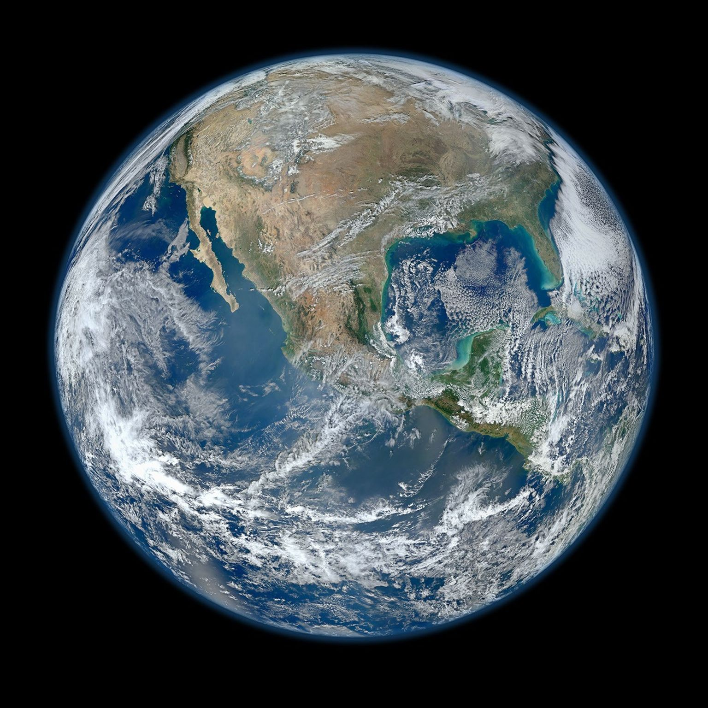
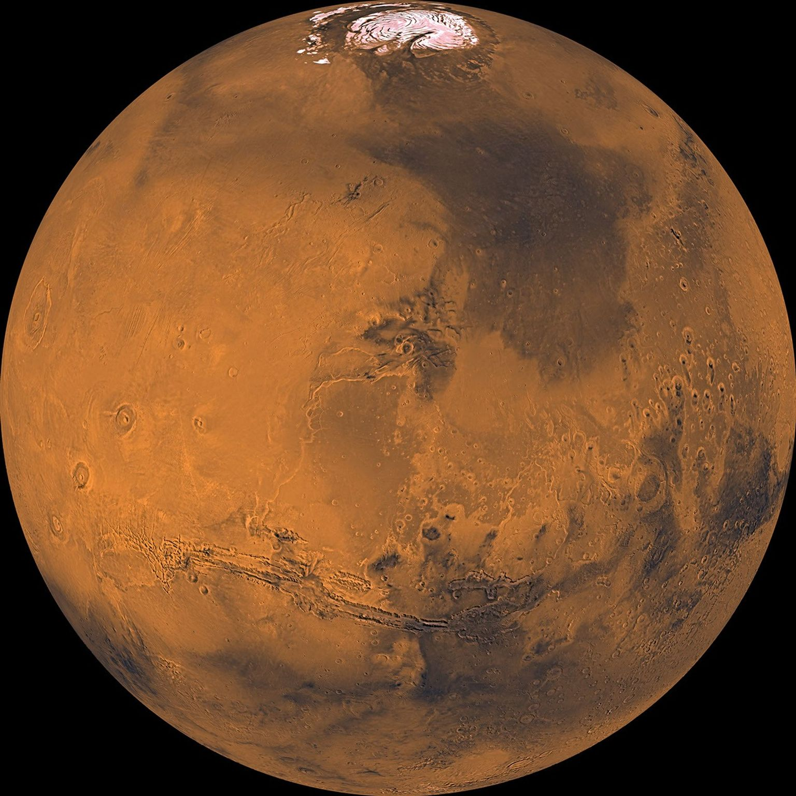
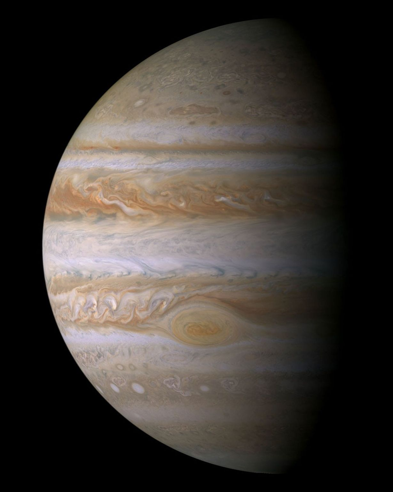
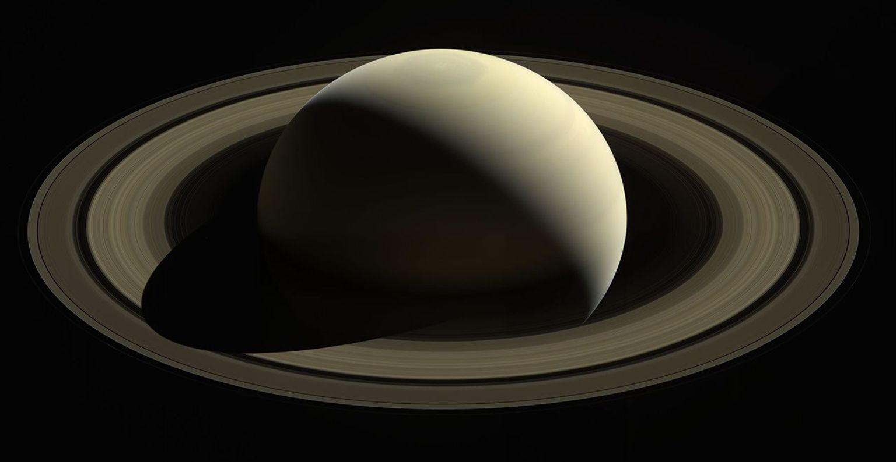

O Sistema Solar
O Sistema Solar é formado pelo Sol e pelos corpos celestes que giram ao seu redor. Entre eles estão os planetas, as luas, os asteroides e os cometas. A gravidade do Sol mantém esses objetos em suas órbitas.
Como surgiu o Sistema Solar?
Segundo a explicação científica mais aceita, o Sistema Solar começou a se formar há aproximadamente 4,6 bilhões de anos a partir de uma grande nuvem de gás e poeira. O Sol se formou na região central, enquanto parte do material ao redor deu origem aos planetas e a outros corpos menores.
Quais são os planetas?
Existem oito planetas reconhecidos no Sistema Solar. Na ordem de distância do Sol, eles são: Mercúrio, Vênus, Terra, Marte, Júpiter, Saturno, Urano e Netuno.

Tipos de planetas
Planetas rochosos
Mercúrio, Vênus, Terra e Marte são chamados de planetas rochosos. Eles possuem superfície sólida e ficam na região mais próxima do Sol.
Planetas gigantes
Júpiter e Saturno são gigantes gasosos, formados principalmente por hidrogênio e hélio. Urano e Netuno são chamados de gigantes de gelo, pois apresentam composição interna diferente. Esses quatro planetas não possuem uma superfície sólida como a da Terra.

E Plutão?
Plutão já foi considerado o nono planeta. Em 2006, passou a ser classificado como planeta anão pela União Astronômica Internacional. Isso não significa que deixou de existir, apenas que sua classificação mudou.
Galeria dos planetas
Veja quatro imagens reais de planetas registradas por satélites e sondas espaciais. Algumas foram montadas a partir de várias fotografias.




Referências
Textos elaborados com base em materiais educativos da NASA. As imagens da galeria são registros de missões espaciais divulgados pela NASA; algumas são mosaicos de várias fotografias.